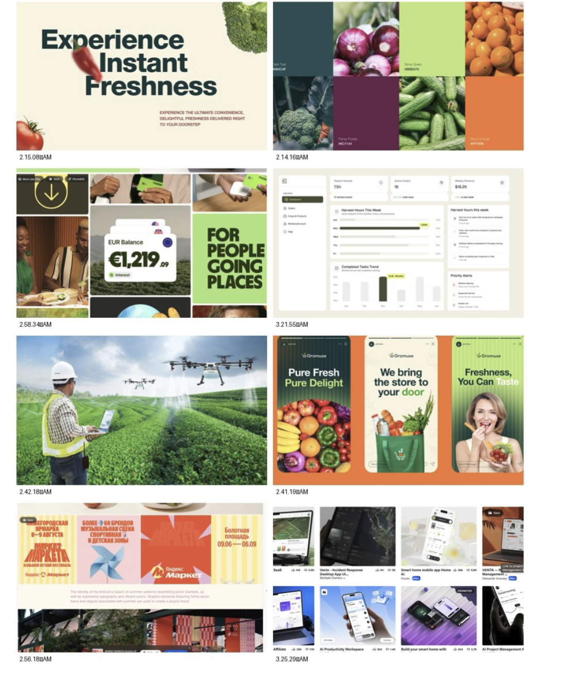

The working blueprint for Verdant Foods' Phase 1 platform: who it serves, how it is structured, how each experience behaves, and how design, frontend and backend come together.
Version
2.0 — redesigned & content-audited
Date
October 2026
Source of truth
Verdant Foods Strategy & PRS v1.0 (June 2026)
Prepared by
NEXKOOMSON · Design & Frontend
Verdant FoodsContents
Contents
This document is longer than v1 on purpose: diagrams are given room, tables are readable at 100%, and every claim is labelled by where it comes from.
How to read the labels
A · PRS
Directly supported by the official Verdant Strategy & PRS.
B · UX interpretation
Product/UX structure needed to make the PRS usable.
C · Future
Recommendation not required by the PRS. Needs approval.
P1P2P3
Delivery phase as defined in PRS §5.
Foundations
00
Content audit notes
03
01
Executive product summary
05
02
Business & product context
06
03
Ecosystem map
07
04
User roles & access matrix
08
05
Platform architecture
10
Experiences
06
Public website & marketplace
11
07
Customer experience
12
08
B2B procurement
13
09
Farmer experience
14
10
Digital VSLA
15
11
Verdant admin
16
System & delivery
12
Traceability system
17
13
Journey maps
19
14
UX principles & states
21
15
UX quality check
22
16
UI & design system direction
23
17
Responsive strategy
27
18
Phase roadmap
28
19
Frontend / backend responsibilities
29
20
Development workflow
30
21
Backend requirements
31
22
Next checkpoint & open decisions
32
Verdant Foods · Product Architecture & UX Plan · v2.0
00 · Content audit notesChecked against PRS v1.0
00Content audit
What v1 got wrong, and what replaces it
v1 was compared line by line with the official Strategy & PRS. Strategy was preserved wherever it was clear. The corrections below are applied throughout this version.
#
Issue in v1
Why: PRS reference
Correction applied
Class
01
Farmer & VSLA shown as web portals only.
§3 Tech: farmer & consumer clients are cross-platform mobile (RN/Flutter). NFR-1.1 offline-first; NFR-1.2 <15MB Android.
Marked as mobile clients with offline/sync states. Responsive web is used for design prototyping only.
A
02
"Subscriptions" in the consumer portal.
§4: subscriptions are recurring contract-based delivery for commercial kitchens.
Moved to B2B Supply agreements. Consumer subscriptions are re-labelled as a future idea.
AC
03
B2B "RFQs" as the procurement model.
FR-1.5: buyers generate wholesale bids and filter by soil-health or carbon metrics.
Renamed Bids. Soil-health and carbon filters added to B2B sourcing.
A
04
VSLA IA missing group rules.
FR-2.1: groups establish bylaws: share-price increments and internal lending rates.
Group rules added to VSLA navigation and onboarding.
A
05
QR linked to batches only.
FR-1.4: QR codes are linked to client orders; the page tracks the journey source → delivery.
Trace page is order-level, listing each batch it contains. Every batch keeps a permanent ID (FR-1.2).
A
06
Public trace surface in Phase 1.
§5: the QR-based Traceability Matrix deploys in Phase 2 (months 7–18).
P1 captures IDs + provenance (farm, harvest date) on product pages. The public QR page moves to P2.
AB
Verdant Foods · Product Architecture & UX Plan · v2.0
00 · Content audit notesContinued
#
Issue in v1
Why: PRS reference
Correction applied
Class
07
Single "VSLA Lead" role.
FR-2.1: member registration and group administration are distinct.
Split into VSLA Member (own records) and VSLA Admin (group officer).
A
08
Extension Officers absent.
§4 GTM: Extension Officers onboard VSLAs and train farmers on certification.
Added as a role to confirm: assisted onboarding and verification queue.
B
09
Payments under-specified.
FR-2.4: MoMo payouts to producers & VSLAs; B2C cards + mobile wallets; B2B wires, corporate cards, invoice financing.
Payment methods and payout states made explicit. Invoice financing moved to the P3 finance track.
AB
10
Impact metrics as homepage numbers.
FR-1.3 stores verified soil and carbon data; carbon rewards are Phase 3.
Show only verified figures. No placeholder environmental claims anywhere.
A
11
Stock-up packages presented as a requirement.
Not in PRS.
Kept as a merchandising proposal, clearly labelled.
B
12
Layout defects.
(Design, not content.)
Blank p.3 removed; role-map title overlap fixed; orphaned chart (p.14) integrated; 7–8pt table text raised to 9.5pt; diagrams rebuilt.
Layout
Preserved from v1
The seven-experience model, B2B as operational software, farmer task simplicity, ledger-first VSLA and the design-checkpoint method.
Not changed silently
Every product-logic change above is listed here and tagged where it appears later in the document.
Still needs a decision
Ten open questions are collected in section 22 for NEXKOOMSON and the Verdant team.
Verdant Foods · Product Architecture & UX Plan · v2.0
01 · Executive product summaryFoundations
01Executive product summary
The whole journey of food, in one transparent system.
Verdant is not an online grocery store. It is one ecosystem, with several role-specific experiences, that connects food demand, regenerative supply and farmer finance.
PrincipleConnect demand, supply and farmer finance without making the platform feel fragmented. One design system, one data spine, different jobs per role.
The loop the product must make visible
Grow→Harvest→List→Buy→Deliver
→Trace→Pay & save→Grow again
Product outcome
What the product must do
Source
Premium market access
Consumer marketplace plus a dedicated B2B procurement experience.
A
Farmer enablement
Simple, offline-capable tools for farm profile, harvest batches, inventory, orders and payouts.
A
Traceability
Permanent batch IDs from day one; order-linked QR journey page in Phase 2.
A
VSLA digitalisation
A cloud ledger for members, group rules, contributions, loans and cash position.
A
Operational control
One admin workspace for verification, orders, deliveries, payments and oversight.
B
Verdant Foods · Product Architecture & UX Plan · v2.0
02 · Business & product contextFoundations
02Business & product context
Three problems, two pillars, one bottom line
Problem · Planet
Soil is being depleted
Conventional farming degrades topsoil and drives greenhouse-gas emissions.
Problem · Trust
Food origin is hidden
Buyers want transparency; legacy supply chains conceal origin and footprint.
Problem · People
Farmers are excluded
No structured savings, reliable credit, insurance or digital payments.
Shown only when verified; otherwise hidden, never "pending"
06
Map
Origin and route, where GPS exists
Secondary evidence, not decoration
Phase 1No public page yet. Product and order screens show the farm and harvest date, and every batch gets its ID, so Phase 2 has complete history from day one.
Verdant Foods · Product Architecture & UX Plan · v2.0
Verdant Foods · Product Architecture & UX Plan · v2.0
15 · UX quality checkIndependent review
15UX quality check
What we would change, stated openly
An independent pass over the planned UX. Each recommendation is explicit and needs approval; nothing here has been slipped in silently.
Question
Verdict
Recommendation
Is navigation too large?
In places
Admin: group 16 items into 6 sections. B2B: 9 → 7. Farmer: 10 → 4 tabs + Log harvest.
Is the farmer portal simple enough?
Not in v1
Bottom-bar app with one primary action, offline saves, and local-language labels (Twi, Ewe, Ga) as a C option.
Does B2B have the right emphasis?
Yes, with fixes
Keep it operational. Rename RFQs to Bids (PRS) and merge Procurement into Source.
Is the consumer portal too dashboard-heavy?
Avoided
No metrics. Orders first, Buy again, no subscriptions in P1.
Is the admin logically structured?
Flat
Group by Marketplace / Network / Trust / Money / System; add a Verification queue (FR-1.1).
Is VSLA Phase 1 scoped correctly?
Yes
Add Group rules (FR-2.1). Keep credit, insurance and investment out until P3.
Is traceability at the right level for P1?
Over-scoped
Capture IDs and show provenance in P1; public QR page and logistics events in P2.
Verdant Foods · Product Architecture & UX Plan · v2.0
16 · UI & design system directionBrand foundation
16UI & design system direction
Verdant owns green. The produce brings the colour.
Deep Verdant and Leaf come from the logo. The fresh accents come from the approved reference selection, which gives the vibrancy of food merchandising and stays anchored to the identity.
Core: from the logo
Verdant Deep#024639 · brand, nav, primary
Verdant Night#012B23 · darkest
Leaf#5F9F0D · marks, success
Fresh accents: from the reference selection
Fresh Lime#BBEA70
Blaze Orange#FF7006
Tomato#E5412B
Sun#F7C33C
Blush#F4C4CF
Plum#6C1144
Warm neutrals: no pure-white pages
Cream#F7F1E3
Paper#FFFCF6
Stone#ECE5D6
Line#DDD4C2
Muted#6E675A
Ink#13201B
Marketing & shop
Full accent range in campaign blocks, category tiles and illustration.
B2B & admin
Neutral-led. Lime only as highlight; accents only in charts and status.
Farmer & VSLA
High-contrast and friendly. Plum identifies the VSLA (money) space.
Verdant Foods · Product Architecture & UX Plan · v2.0
16 · UI & design system directionTypography
Marketing / display · Bricolage Grotesque
Grown by Agyeman Farms. Cooked by you.
Chunky and slightly irregular: warm, food-forward and confident. Short stacked headlines, sentence case, full stop. Used on marketing pages only, never above 24px inside dashboards.
Token
Size / line
Use
Display XL · L · M
128 · 96 · 64 / 0.9
Heroes, campaign modules
Headline · Title
32 · 24 / 1.1
Section heads, product price
Mobile display
52 · 40 / 0.95
Mobile heroes
Product UI · Inter
Available produce
Roma tomatoes · Agyeman Farms
Harvested 12 Oct · 340 kg available · No-till
Page title
24 / 32 · 600
Section · Body · Small
16 · 15 · 13
Label
13 / 16 · 500
Numbers & IDs · Inter tabular + IBM Plex Mono
GH₵ 4,820.50
Balances: big numerals, small decimals (tabular figures)
VF-TOM-00042 · INV-2026-0187
IDs, batch codes, invoice numbers
Verdant Foods · Product Architecture & UX Plan · v2.0
16 · UI & design system directionCore components
Designed once, expressed across commerce and operations
Buttons
Shop freshFor businessLog harvestView all →
Input · Select
340 kg
Roma tomato ⌄
Tabs
AvailableReservedSold
Badge · Status
VerifiedPendingIn transitRejectedVF-TOM-00042
Metric card
Deliveries this week
18
▲ 4 vs last week
Product card · with Trace Frame tag
VF-TOM-00042
Roma tomatoes
Agyeman Farms · per kg
GH₵18.50
+
● Harvested yesterday
Farm card
AF
Agyeman Farms
Aburi · 4.2 ha · No-till, cover crops
Data table
Batch
Qty
Status
TOM-00042
340 kg
Verified
GEG-00017
120 kg
Pending
PLT-00009
60 bunch
In transit
Timeline
Harvested· 12 Oct, 06:40
Quality checked· 12 Oct
Collection· due 13 Oct
Empty state
No harvests yet
Log your first batch to start selling.
+ Log harvest
Verdant Foods · Product Architecture & UX Plan · v2.0
16 · UI & design system directionReferences & signature devices

Approved reference selection (internal, not for publication). Benchmark for palette, type × produce, dashboard density and fintech numerals.
What we take, and what we turn into Verdant's own
Reference principle
Becomes in Verdant
Giant type × cut-out produce
Homepage and campaign heroes; produce overlaps headlines.
Grocery palette blocks
Lime, orange, plum, sun, blush as merchandising grounds.
Fintech big numerals
VSLA balances and farmer payouts: large figures, small decimals.
Warm calm dashboard
B2B, farmer and admin density: stone canvas, white panels, one highlight.
Festival patterns
Seasonal campaign stripes and pattern bands.
Agritech in the field
Technology shown at work in Ghanaian fields, art-directed and never stock.
Signature devices
Trace Frame
Hairline frame + mono ID tab around the hero produce. Makes traceability visible.
Verdant Crate
The recurring campaign object, with produce rising out of a stamped crate.
Produce silhouettes
Flat, faceless, slightly irregular shapes for tiles, empty states and patterns.
Headline formula
"Grown by ___. ___ by you." Repeatable, and it carries provenance.
Verdant Foods · Product Architecture & UX Plan · v2.0
17 · Responsive strategyDelivery
17Responsive strategy
Designed for each device, not shrunk to fit it
Desktop · 1440
Rich composition, full data
12-col marketing grid, 1312 content
248px sidebar in portals
Tables with filter bar + detail panel
Tablet · 768–1024
Condensed, still capable
Sidebar collapses to icon rail
Two-up cards; tables keep key columns
Detail panels open as drawers
Mobile · 390
Task-first
Bottom bar + one primary action
Tables become cards
Multi-column becomes a task stack
Pattern
Desktop
Tablet
Mobile
Farmer inventory
Table
Table, fewer columns
Batch cards
Navigation
Top nav / sidebar
Icon rail
Bottom bar / drawer
Filters
Persistent filter bar
Collapsible bar
Filter sheet
Detail view
Side panel
Drawer
Full screen
Checkout
Two columns + summary
Two columns
Stepped, sticky pay bar
Verdant Foods · Product Architecture & UX Plan · v2.0
Comprehensive QR Traceability Matrix; cold-chain partnerships.
Order-linked QR (print + digital)
Public trace page
Collection, dispatch, delivery events
3PL / cold-chain integration
Soil & carbon filters fully live in B2B
Richer reporting
Phase 3 · Financial expansion
Insurance and carbon rewards (PRS); finance features by interpretation.
Climate-indexed crop insurance
Carbon credit rewards for farmers
Alternative credit scoring B
Micro-investment B
B2B invoice financing B
Do not overbuildPhase 2 and 3 features do not appear in Phase 1 navigation as disabled items. Data captured in P1 (batch IDs, verified methods) is what makes P2 and P3 possible.
Verdant Foods · Product Architecture & UX Plan · v2.0
19 · Frontend / backend responsibilitiesDelivery
19Frontend / backend responsibility map
Clear lines, so integration needs no redesign
Concern
Frontend: NEXKOOMSON
Backend: Verdant developer
Shared contract
Design & UI
Figma system, components, all screens and states
-
Status names, copy for errors
Data
Typed models, realistic mock data, service layer
Schema, persistence, business rules
Entity & field definitions
Auth & roles
Login flows, protected routes, role-based UI
Identity, permissions, sessions/tokens
Role list & permission map
Traceability
Batch, journey and trace-page UI; QR display
ID generation, ledger, QR generation
ID format, journey events
Payments
Checkout UI, payment states, payout views
Gateway, MoMo/bank APIs, settlement
Payment status enums
Offline
Local cache, sync UI, conflict messages
Sync endpoints, conflict resolution
Sync protocol
Security
No secrets in client, input validation
TLS 1.3, AES-256, KYC/AML (NFR-2)
Error codes
Hosting
GitHub repo, Vercel previews
API hosting, environments
Base URLs per environment
Integration sequence, per module
01 · Mock
Typed mock data
Screens run on realistic Ghanaian data shaped to the agreed entity definitions.
02 · Contract
Agree the endpoint
Backend confirms fields, enums and errors; the service layer is aligned to them.
03 · Live
Swap to the API
Switched per module behind an environment flag and tested on a Vercel preview.
Verdant Foods · Product Architecture & UX Plan · v2.0
20 · Development workflowDelivery
20Development workflow
Figma first. Analyse, systemise, test, then expand.
A · DONE
Foundation
Docs, audit, tokens
B · NOW
Design Lab
Figma: colour, type, components
C · NOW
3-screen test
Home, Marketplace, Farmer dashboard
D
Review
One system? Approve
E
Expand
Customer, B2B, VSLA, Admin, Trace
F
Responsive + states
Per module, not at the end
G
Build
Next.js from approved Figma
H
Ship
GitHub → Vercel preview → API
Checkpoint
Approval question
B · Design Lab
Is the language coherent and true to Verdant and the references before screens are produced?
C · 3-screen test
Do brand, commerce and software feel like one ecosystem?
E–F · Modules
Can each role complete its key tasks on every device, in every state?
G–H · Handoff
Can the backend developer integrate without redesigning the frontend?
Verdant Foods · Product Architecture & UX Plan · v2.0
21 · Backend requirementsDelivery
21Backend requirements & dependencies
What we need from the backend developer
Design continues on realistic mock data now. Integration quality depends on these.
#
Need
Why it matters
01
API documentation
Maps screens and actions to real capability
02
Auth method
Sessions, protected routes, login states
03
Roles & permissions
Stops the UI inventing access rules
04
Entity & field definitions
Farm, batch, order, bid, VSLA, user
05
Status enums
One operational language end to end
#
Need
Why it matters
06
Sample responses + test logins
Realistic integration and error handling
07
Uploads & images
Farm, product, receipt and profile media
08
Offline sync contract
NFR-1.1 for farmer and VSLA clients
09
Traceability ID & QR rules
FR-1.2 / 1.4 format and ownership
10
Dev / prod base URLs
Safe Vercel preview testing
Already specified in the PRS: no need to ask
Architecture
Decoupled microservices, REST or GraphQL (NFR-3.1)
Data
PostgreSQL for transactions and ledgers; Redis for sessions and queues
Security
TLS 1.3 in transit, AES-256 at rest, KYC/AML (NFR-2)
OwnerThese items sit with Verdant's backend developer. We integrate; we do not redesign the backend.
Verdant Foods · Product Architecture & UX Plan · v2.0
22 · Next checkpoint & open decisionsDelivery
22Next design checkpoint
Three screens that must feel like one system
00 · Design Lab
Tokens, type, components in Figma
01 · Homepage
Brand + commerce · 1440 / 390
02 · Marketplace
Commerce · 1440 / 390
03 · Farmer dashboard
Operational software · 1440 / 390
Decisions needed from NEXKOOMSON & Verdant
#
Decision
Owner
01
Farmer & VSLA in P1: native app (PRS) or installable web app first?
Verdant
02
Keep stock-up packages; any consumer subscriptions?
Verdant
03
Guest checkout allowed?
Verdant
04
Extension Officers as a platform role?
Verdant
05
Bids: buyer-initiated only, or can farmers counter?
Verdant
06
QR per order (PRS) and/or per pack/crate?
Verdant
07
Traceability ID format and who generates it
Backend
08
MoMo networks and card/bank providers
Backend
09
Photography: commissioned shoot or art-directed imagery?
Nex
10
Local-language support in farmer & VSLA apps C
Verdant
Verdant Foods · Product Architecture & UX Plan · v2.0
Basis of this document
Verdant Foods Integrated Corporate Strategy: Business Plan & Product Requirement Specification v1.0 (June 2026); the official Verdant Foods logo; the approved visual reference selection. Where this document proposes UX structure or visual direction beyond the PRS, it is labelled B (interpretation) or C (future) and is not presented as a business requirement.
v2.0 · October 2026 · NEXKOOMSON for Verdant Foods